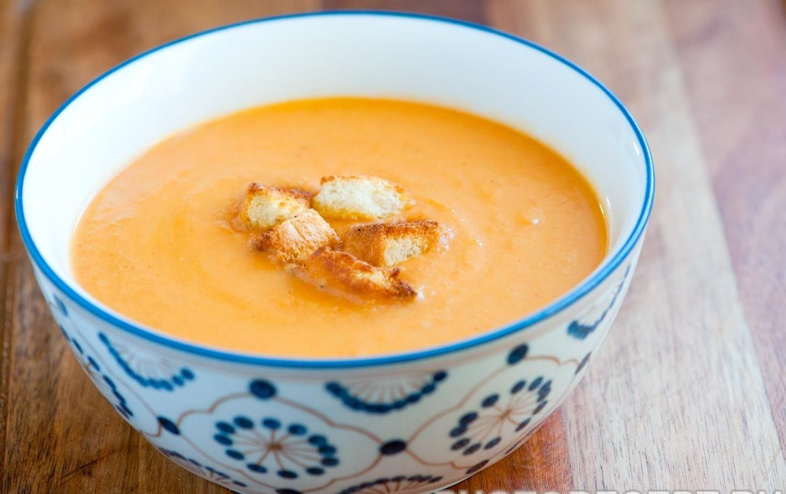

Добро пожаловать на кулинарный портал
О нашем портале
Наш кулинарный портал создан для всех, кто любит готовить и хочет открывать для себя новые вкусы. Здесь вы найдете лучшие, проверенные рецепты на каждый день: от быстрых завтраков до праздничных ужинов. Мы собираем кулинарные традиции разных стран, чтобы вы могли экспериментировать на кухне, не выходя из дома.
Изучайте подробный каталог, сохраняйте понравившиеся блюда в личное избранное и делитесь своими кулинарными шедеврами с другими пользователями. Для удобства мы разбили рецепты на тематические подборки, а в карточках блюд всегда указана калорийность и список ингредиентов. Присоединяйтесь к нашему сообществу, вдохновляйтесь и готовьте с удовольствием!
Популярные рецепты
Тыквенный суп-пюре

Ароматный, нежный и бархатистый суп из тыквы со сливками. Тыква запекается до мягкости, затем пробивается блендером вместе с обжаренным луком, морковью и чесноком. Сливки добавляются в конце, чтобы сохранить нежную текстуру.
Калорийность: 108 ккал на 100 г.
Солянка с капустой и грибами

Сытное тушёное блюдо из белокочанной капусты с грибами, морковью и луком. Овощи готовятся в собственном соку, поэтому блюдо получается особенно ароматным и насыщенным.
Калорийность: 70 ккал на 100 г.